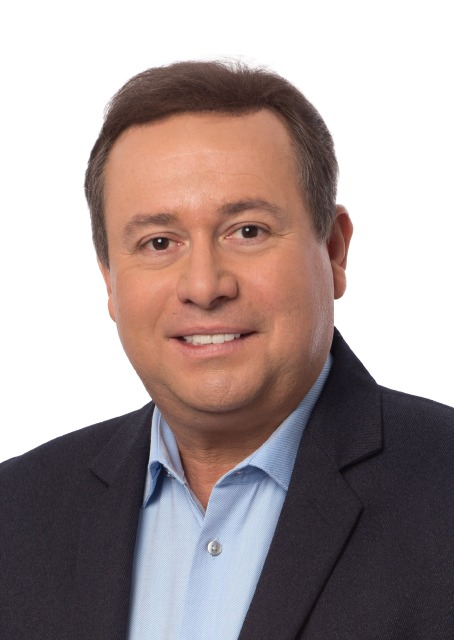

A cidade é nossa.
A cobrança também.
Fotos oficiais: Câmara dos Deputados — Baleia Rossi; Alesp — Léo Oliveira; Câmara dos Deputados — Fausto Pinato.
Preparando o vídeo para começar com som.

Fotos oficiais: Câmara dos Deputados — Baleia Rossi; Alesp — Léo Oliveira; Câmara dos Deputados — Fausto Pinato.